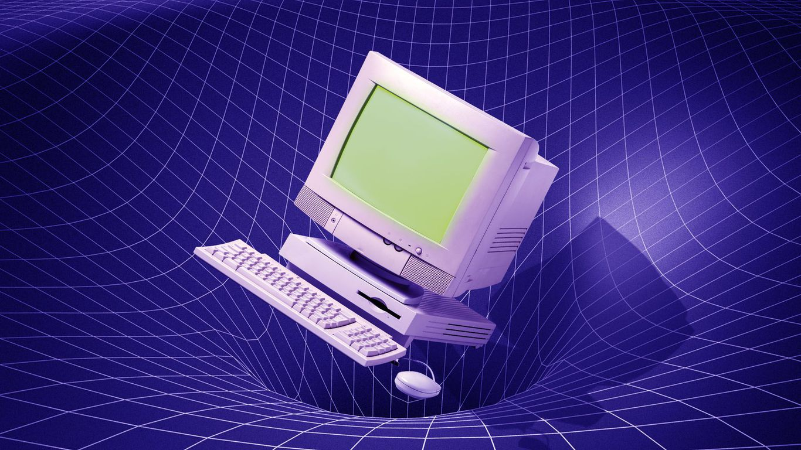
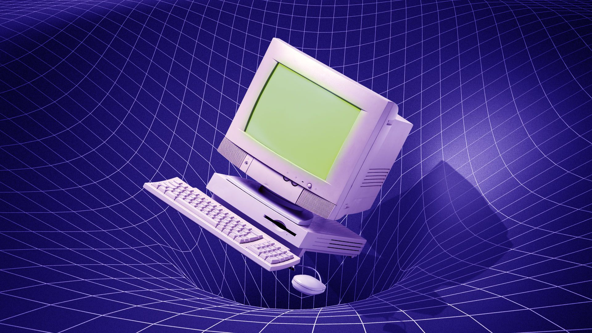
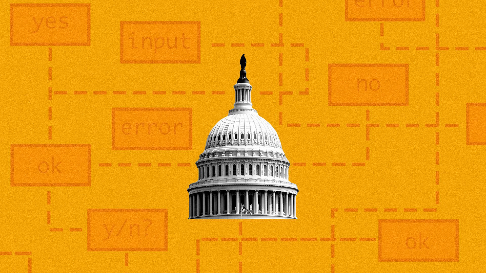

Exclusive: Air Force research taps quantum computing

U.S. Air Force researchers are partnering with a quantum computing company to use its machine learning algorithms, Axios has learned.
Why it matters: Quantum is the next generation of computing, and its growing adoption by the military shows the progress of the technology as it gradually moves out of the lab and into the real world.
Driving the news: Later this morning the Air Force Research Laboratory (AFRL) — its technological development wing — will announce a partnership with the quantum computing software company QC Ware to harness its algorithms to better surveil unmanned aircraft.
What they're saying: 'The question is, if you have a number of data points, like satellite images or flight paths, can you group them together so that you can assign some sort of meaning to all the signals you have out there?'says Iordanis Kerenidis, head of quantum algorithms at QC Ware.
Details: Part of that advantage is quantum computing's theoretical ability to simulate reality more accurately than its classical counterparts.
Context: 'The Air Force is famous for deploying technologies throughout our history that have really made a difference,' says Michael Hayduk, deputy director at the AFRL's information directorate.
The bottom line: Even some experts believe there has been more hype than reality to quantum computing so far, which makes real-world experiments like this one all the more necessary.
Posted On: 2021-04-27T00:00:00
Posted By: Bryan Walsh


Content Date: 2021-04-27
Download Date: 2021-05-15
Document ID: L0C04CGX2